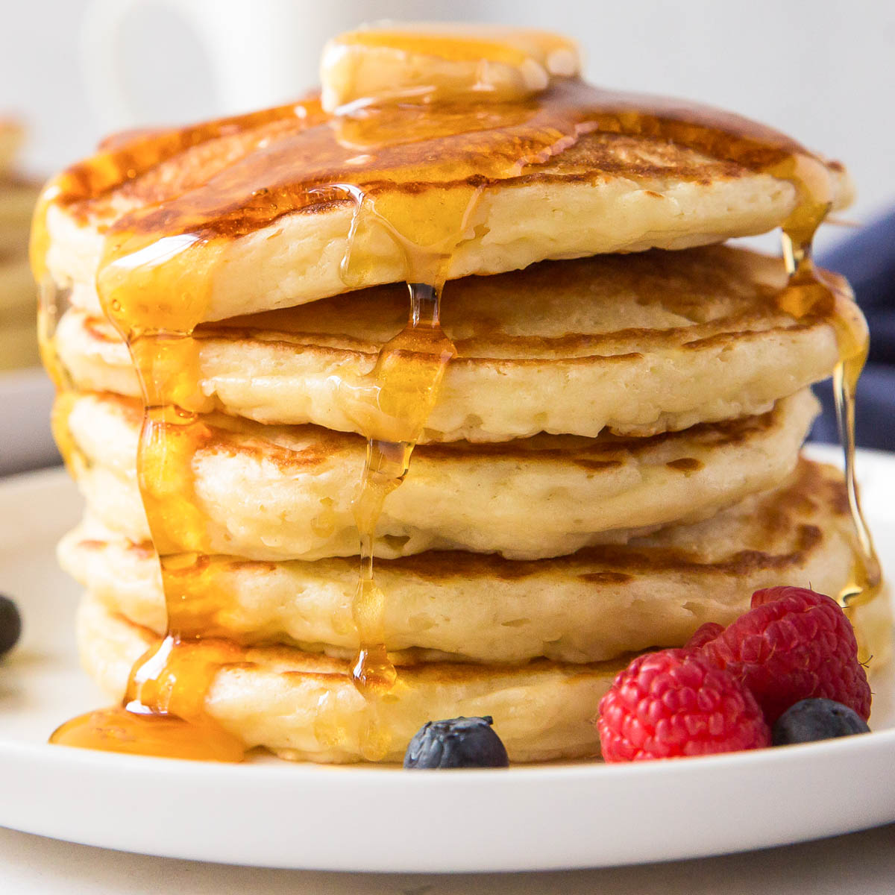

Pancakes

Pancakes are a classic breakfast favorite that are fluffy, light, and delicious.
They are made from a simple batter of flour, eggs, milk, and baking powder, cooked on a griddle or skillet until golden brown.
Pancakes can be served with a variety of toppings, such as maple syrup, fresh fruit, whipped cream, or chocolate chips,
making them a versatile and satisfying meal to start your day.
Ingredients:
- 1 cup all-purpose flour
- 2 tablespoons sugar
- 1 tablespoon baking powder
- 1/2 teaspoon salt
- 1 cup milk
- 1 large egg
- 2 tablespoons melted butter (plus extra for cooking)
- 1 teaspoon vanilla extract (optional)
Steps
- Mix Dry Ingredients: In a large bowl, whisk together the flour, sugar, baking powder, and salt until well combined.
- Combine Wet Ingredients: In another bowl, mix the milk, egg, melted butter, and vanilla extract (if using) until smooth.
- Combine Mixtures: Pour the wet ingredients into the dry ingredients. Stir gently until just combined. Be careful not to overmix; a few lumps are okay.
- Preheat Skillet: Heat a non-stick skillet or griddle over medium heat. Add a small amount of butter to coat the surface.
- Cook Pancakes: Pour about 1/4 cup of batter onto the skillet for each pancake. Cook until bubbles form on the surface and the edges look set, about 2-3 minutes.
- Flip and Cook: Carefully flip the pancakes and cook for another 1-2 minutes until golden brown and cooked through.
- Serve: Remove the pancakes from the skillet and keep warm. Repeat with the remaining batter, adding more butter to the skillet as needed. Serve warm with your favorite toppings.
Home